Thank you so much for purchasing a Smart Puck. Getting it set up should
only take a few minutes so let's get started.
You may have a warning in your browser
telling you this page is insecure. That's because your browser is concerned about us trying to
connect to your puck. This is normal. The setup process doesn't transfer any of your data over the internet.
Your WiFi password will be sent directly to the puck from your device in an encrypted way.
Connect the Puck
Connect the provided USB cable to your puck.
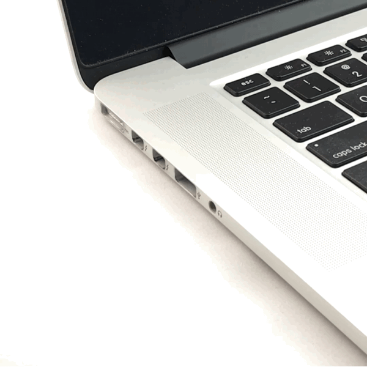
Supply Power
Connect the USB cable to a power source such as a cell phone charger or laptop.
Select the type of device you are using to configure your puck.
Other Device Type
What kind of Apple device are you using?
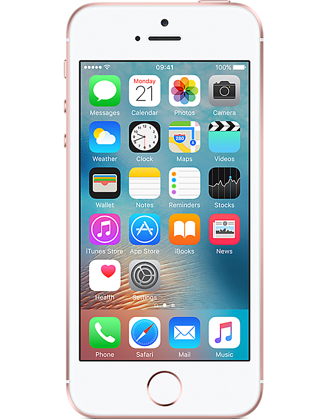
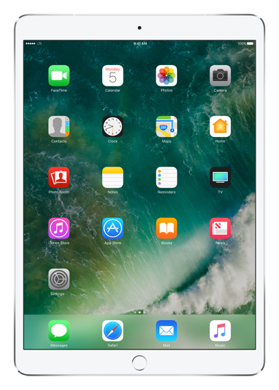
WiFi Setup
To start your puck we need to connect it to the internet through your home WiFi network.
This only has to be done once. Follow the steps
below to get connected.
Open the Settings app 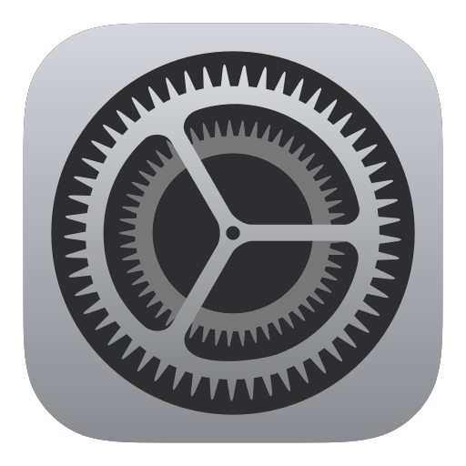
Choose Wi-Fi to open the WiFi settings.
Ensure WiFi is enabled and select the puck's network. It may take up to 30 seconds to appear. It will begin with
MySmartPuck- followed by several characters similar to the image below.
Note: your puck network will have a different name than the network shown in the image.
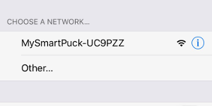
Once your device is connected to the puck WiFi your settings will look similar to the following
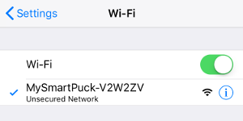
Return to this setup page once connected and click Next.
WiFi Setup
To start your puck we need to connect it to the internet through your home WiFi network.
This only has to be done once. In OSX this can be
done through System Preferences or via the menu bar. Instructions for both are provided below.
Via the Menu Bar
Click on the WiFi indicator in your menu bar to show a list of available WiFi
networks. It's normally located in the upper righthand corner of your screen.
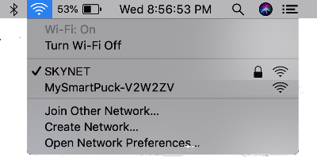
Ensure WiFi is enabled and select the puck's network from the list. It will begin with MySmartPuck-
followed by several characters similar to the image above.
Note: your puck network will have a different name than the network shown in the image.
Once your device is connected to the puck WiFi a check will appear next to the network name as follows
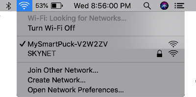
Return to this setup page once connected and click Next below.
Via System Preferences
Open System Preferences and select Network.
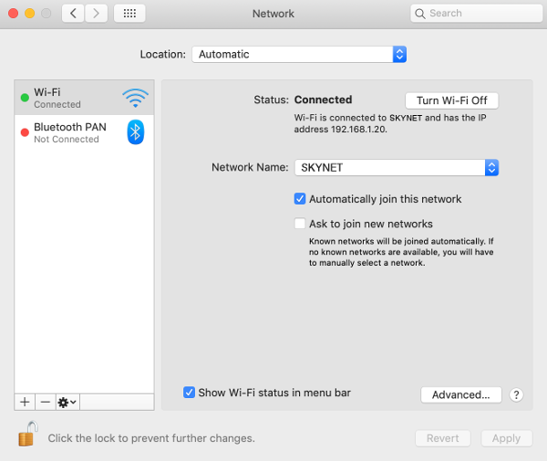
Ensure WiFi is enabled and select the puck's network from the dropdown. It will begin with MySmartPuck-
followed by several characters.
Once your device is connected to the puck WiFi your settings will look similar to the image below.
Note: your puck network will have a different name than the network shown in the image.
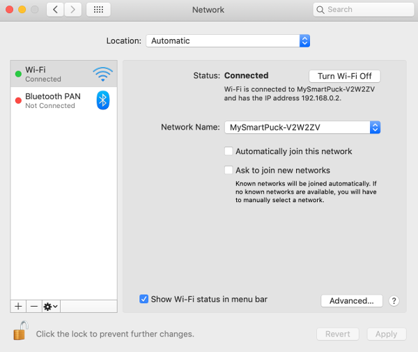
Return to this setup page once connected and click Next.
WiFi Setup
To start your puck we need to connect it to the internet through your home WiFi network.
This only has to be done once. Follow the steps
below to get connected.
Open the Settings app
Choose Connections followed by Wi-Fi to open the WiFi settings
Ensure WiFi is enabled and select the puck's network. It will begin with
MySmartPuck- followed by several characters similar to the image below.
Note: your puck network will have a different name than the network shown in the image.
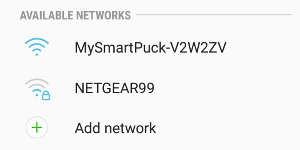
When you select the puck's network disable "Auto reconnect"
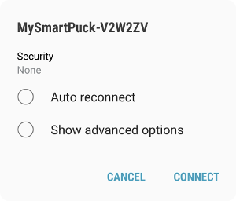
Tap Connect
Your device will notice it can't get to the internet through the puck and might show a notification like
the image below.
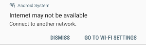
Tap Dismiss
Once your device is connected to the puck WiFi your settings will look similar to the following
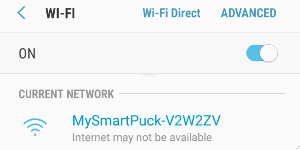
Return to this setup page once connected and click Next.
WiFi Setup
To start your puck we need to connect it to the internet through your home WiFi network.
This only has to be done once. In Windows this can be
done through the Settings app or via the menu bar. Instructions for both are provided below.
Via the Menu Bar
Click on the WiFi/Network indicator in your menu bar to show a list of available WiFi
networks. It's normally located in the lower righthand corner of your screen by the date and time.
A list of available networks will appear.
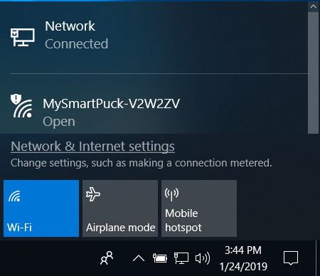
Ensure WiFi is enabled and select the puck's network from the list. It will begin with MySmartPuck-
followed by several characters similar to the image below. Note: your puck
network will have a different name than the network shown in the image.
After selecting the puck network you will be prompted to connect to it. Be sure "Connect automatically" is unchecked.
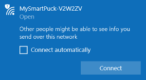
Click Connect. It may take up to a minute to connect to the puck.
Once your device is connected to the puck WiFi the network will look similar to the following
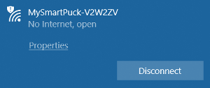
Return to this setup page once connected and click Next
Via The Settings App
Open the Settings app
Select Network & Internet.
On the Network Status page click "Show available networks". The network list will appear.
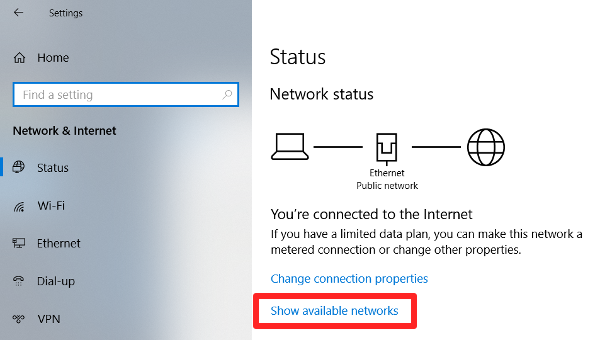
Select the puck's network from the list. It will begin with MySmartPuck-
followed by several characters similar to the image below. Note: your puck
network will have a different name than the network shown in the image.
After selecting the puck network you will be prompted to connect to it. Be sure "Connect automatically" is unchecked.
Click Connect. It may take up to a minute to connect to the puck.
Once your device is connected to the puck WiFi the network will look similar to the following
Return to this setup page once connected and click Next below.
WiFi Setup
To start your puck we need to connect it to the internet through your home WiFi network.
This only has to be done once. Here are some generic
instructions on how to do that.
Open the WiFi Settings on your device.
Ensure WiFi is enabled and search for nearby WiFi networks.
Select the puck's network. It will begin with
MySmartPuck- followed by several characters similar to the image below.
Note: your puck network will have a different name than the network shown in the image.
Dismiss any warnings about the puck WiFi not having access to the internet. It may also be
necessary to disable cellular data so your device doesn't ignore the puck WiFi as it does not
have access to the internet.
Once your device is connected to the puck WiFi return to this setup page and click Next.
Searching
I'm trying to connect to your puck. Please wait...
Loading...
Puck Found!
Below is a list of nearby networks the puck found. Select your network from the list, enter your password,
and click Connect. Your password will be encrypted and sent directly to the puck (not over the
intenet) so it can connect to your WiFi network.
The color next to each network indicates how strong the signal is. Green is excellent, yellow is ok, and red
means the signal is likely too poor for the puck to work. To get a better signal move your puck closer to
your WiFi source and scan again.
Scan Again
Scanning for WiFi networks...
Uh oh!
I'm having trouble finding your puck. Make sure the phone, tablet or computer you are using is connected to the
MySmartPuck WiFi network and try again.
Did It Work?
We sent your password directly to the puck and now it's trying to connect to your WiFi and get stats.
If successful it will display those stats within 20 seconds.
That's It!
Your puck will display the latest stats after each game. All you have to do is keep it within WiFi
range and it will take care of the rest.
We want to sincerely thank you again for purchasing a StatFeedr product. If you have any trouble with
it please reach out to support@statfeedr.com.
Remember to leave your puck plugged in for 8 hours to
allow it to charge completely.
Enjoy Your Puck!
If your puck doesn't update the most common issue is an incorrect WiFi password.
Don't worry, it happens. We can just go through the setup process again. You might want
to use the "Show password" checkbox the next time you enter it just to be sure you're typing
it correctly and also verify that your caps lock isn't on.
If you're sure your password is correct and you've tried multiple times then
it's time to reach out to support so we can get this resolved. Simply email us at
support@statfeedr.com and we'll figure this out together.